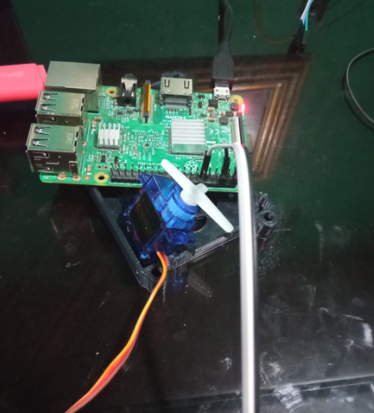
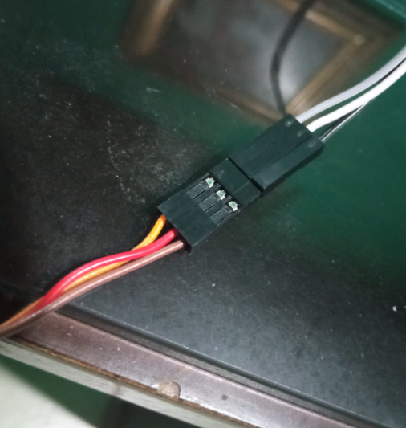

Aquí es parecido, el código funciona de tal manera que el servo se mueva a la posición específica, determinada por grados, 0 como su posición inicial y teniendo limite hasta 360
import RPi.GPIO as GPIO
import time
# Pin GPIO utilizado para el control del servo
pin_servo = 17
GPIO.setwarnings(False)
def setup():
GPIO.setmode(GPIO.BCM)
GPIO.setup(pin_servo, GPIO.OUT)
def set_angle(angle):
pwm.ChangeDutyCycle(2 + (angle/18))
time.sleep(0.5)
pwm.ChangeDutyCycle(0)
try:
setup()
pwm = GPIO.PWM(pin_servo, 50)
pwm.start(0)
while True:
angle = float(input("Introduce el ángulo (0 a 360): "))
set_angle(angle)
except KeyboardInterrupt:
pwm.stop()
GPIO.cleanup()
if rotate_dir != 1 and rotate_dir != -1:
rotate_dir = 1
if rot_spd > 1 or rot_spd < 0.001:
rot_spd = 0.001
print(rotate, rotate_dir, rot_spd)
for i in range(0, (rotate + 1)):
for pin in range(0, 4):
Pattern_Pin = ControlPin[pin]
if seq[step_seq_num % len(seq)][pin] == 1:
GPIO.output(Pattern_Pin, True)
else:
GPIO.output(Pattern_Pin, False)
step_seq_num += rotate_dir
time.sleep(rot_spd)
GPIO.cleanup()
Realizado por Christopher Eduardo Barrientos Guerra